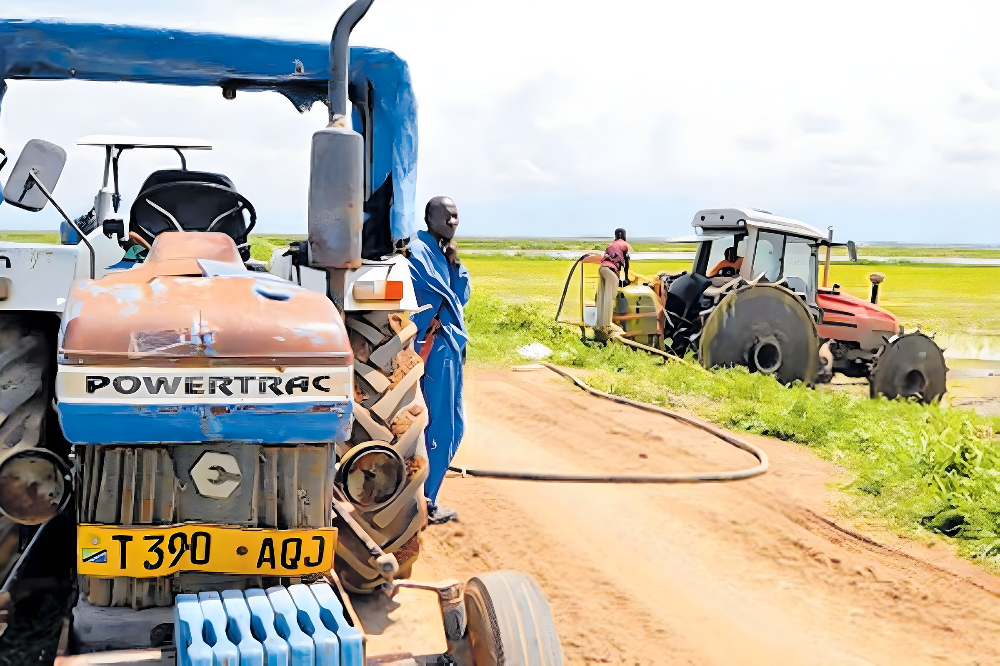

Home / The Farmer-Centric Model
Moving beyond projects to build agricultural ecosystems
The philosophy in Abundance, turned into eight steps that governments, businesses, lenders and development partners can adopt and adapt.

Who does what, at every step
Each step sets out the responsibility of government, business, financial institutions and development partners. The index follows you as you read.
Understand the farmer
Start with the household: land, labour, cash flow, risk and ambitions.
- Government
- Farmer registries, land records and baseline data that can be shared.
- Business
- Field surveys and conversations before designing any offer.
- Financial institutions
- Understand seasonal cash flows behind repayment capacity.
- Development partners
- Fund independent baseline studies.
Build trust
Without trust, no input, loan or contract will be taken up.
- Government
- Resolve land questions fairly and transparently.
- Business
- Forward contracts and prices honoured season after season.
- Financial institutions
- Clear, fair terms explained in local languages.
- Development partners
- Support farmer organisations and local leadership.
Address infrastructure
Irrigation, roads, power and storage make everything else possible.
- Government
- Invest in and maintain public irrigation and rural roads.
- Business
- Co-invest in on-farm and post-harvest assets.
- Financial institutions
- Long-tenor infrastructure lending.
- Development partners
- Blended finance that lowers early-stage risk.
Enable productivity
Improved seed, inputs, agronomy and mechanisation, delivered together.
- Government
- Seed certification and extension services.
- Business
- Input packages, agronomists and mechanisation services.
- Financial institutions
- Input credit tied to the crop cycle.
- Development partners
- Training and demonstration plots. Seeing is believing.
Provide finance
Credit that matches how and when farmers earn.
- Government
- Enabling regulation and credit guarantee schemes.
- Business
- Contracts that serve as collateral; recovery at the point of sale.
- Financial institutions
- Seasonal products and crop insurance.
- Development partners
- First-loss capital and risk-sharing facilities.
Connect to markets
An assured buyer turns production into income.
- Government
- Predictable trade and pricing policy.
- Business
- Offtake agreements and fair, timely payment.
- Financial institutions
- Warehouse receipts and trade finance.
- Development partners
- Market information and quality standards.
Create rural value addition
Milling, processing and storage close to the farm keep value in the community.
- Government
- Incentives for rural processing and power supply.
- Business
- Processing capacity and support for farmer-owned enterprises.
- Financial institutions
- Asset finance for mills and storage.
- Development partners
- Skills for young people and women entrepreneurs.
Measure prosperity
Judge success by farmer income and community wellbeing, not tonnes alone.
- Government
- Track rural incomes and outcomes over time.
- Business
- Publish yields, participation and payments.
- Financial institutions
- Report repayment and portfolio health.
- Development partners
- Independent evaluation and shared learning.
Seven services, one system
Trust-building, irrigation, an integrated nucleus–outgrower system and assured markets took Kapunga's yields from under one tonne to more than seven per hectare.
Seed without water. A loan without a buyer. Each service arrives alone, on its own timetable, and the farmer carries all of the risk.
Seven services planned together and run on commercial terms. The same farmer, on the same land, becomes an enterprise.
Select a serviceChoose any circle to see its role.